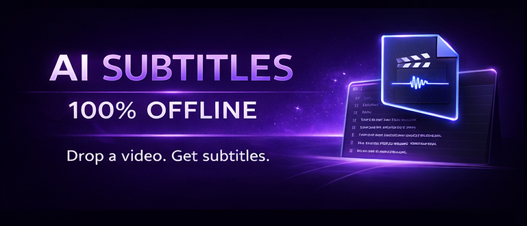
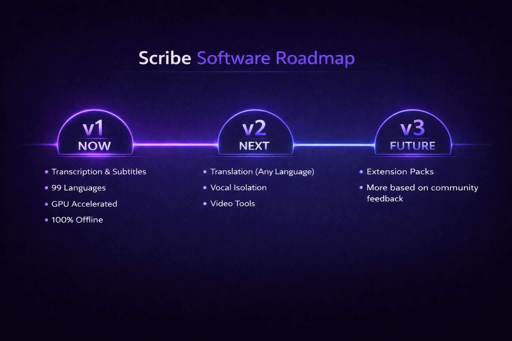

Drop a file. Get subtitles. Automatic subtitle generator with 99 languages, GPU accelerated, fully offline. Your files never leave your machine.
Get Scribe on itch.ioScribe is an offline speech-to-text software that turns audio and video files into accurate subtitles and transcripts — no internet connection required.
Drop any audio or video file — mp3, wav, mp4, mkv, webm, flac, and more.
Generate timed .srt subtitle files or plain .txt transcripts. Works as a video transcription tool or audio-to-text converter.
Automatic language detection. Supports 99 languages out of the box.
Vulkan GPU acceleration for fast processing. Works on CPU too, just slower.
One-time model download (~3 GB), then everything runs locally. No internet needed.
Pay once, use forever. No accounts, no API keys, no per-minute charges.
Most transcription tools are cloud services. That means uploading files, waiting for processing, paying per minute, and trusting someone else with your audio.
Scribe works differently:
Powered by OpenAI's Whisper large-v3 speech recognition model — the same AI used by professional transcription services, running entirely on your local machine.
English, Chinese, German, Spanish, French, Japanese, Portuguese, Russian, Korean, Italian, Dutch, Polish, Swedish, Turkish, Arabic
Most European, East Asian, and South Asian languages
Less common languages may have reduced accuracy
Audio quality matters. Clean recordings (podcasts, lectures, interviews) give the best results. Heavy background music or overlapping speech will reduce accuracy.
A GPU makes a huge difference in processing speed.

This is AI transcription. It's good, but not perfect — no tool is. Expect occasional errors with accents, mumbling, overlapping speakers, or noisy audio.
Some languages work much better than others.
Scribe is currently a transcription tool, not a translator — translation is planned for v2.
Pay once. Use forever. No subscriptions.
Get Scribe on itch.io